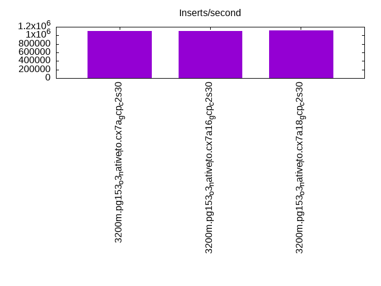
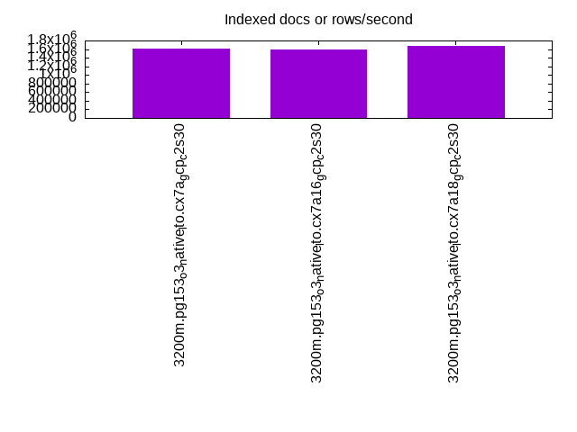
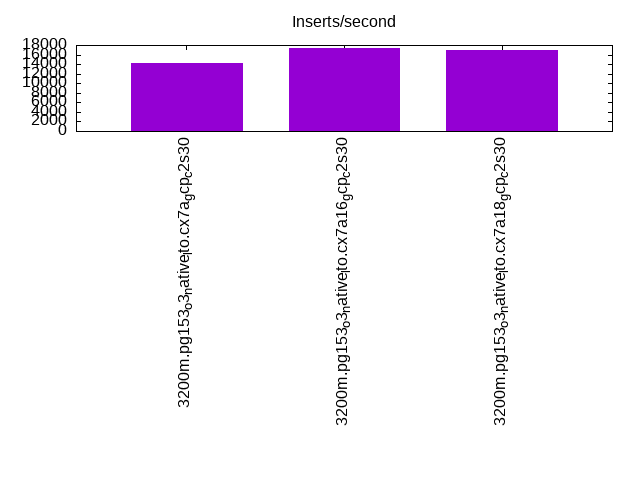
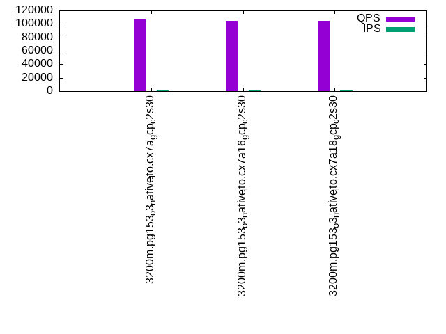
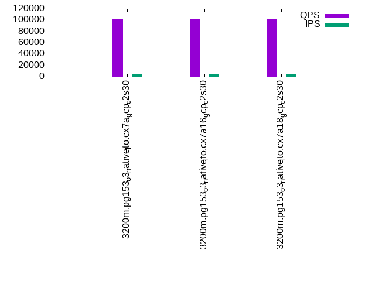
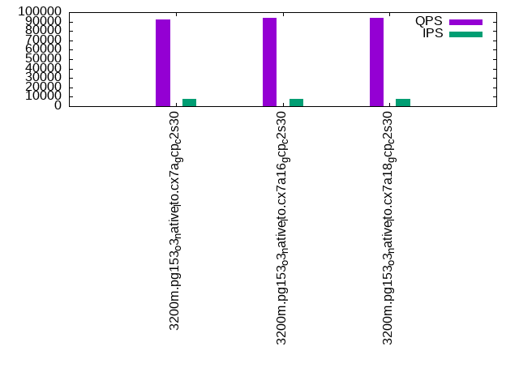

This is a report for the insert benchmark with 3200M docs and 8 client(s). It is generated by scripts (bash, awk, sed) and Tufte might not be impressed. An overview of the insert benchmark is here and a short update is here. Below, by DBMS, I mean DBMS+version.config. An example is my8020.c10b40 where my means MySQL, 8020 is version 8.0.20 and c10b40 is the name for the configuration file.
The test server is a c2-standard-30 with 15 cores, hyperthreads disabled, 120G RAM and XFS with SW RAID 0 across 4 NVMe SSD. The benchmark was run with 8 clients and there were 1 or 3 connections per client (1 for queries or inserts without rate limits, 1+1 for rate limited inserts+deletes). It uses 8 tables, 1 per client. It loads 400M rows per table without secondary indexes, creates secondary indexes, then inserts 20M rows per table with a delete per insert to avoid growing the table. It then does 3 read+write tests for 3600s each that do queries as fast as possible with 100, 500 and then 1000 inserts/second/client concurrent with the queries and 1000 deletes/second to avoid growing the table. The database is larger than memory. Clients and the DBMS share one server. The per-database configs are in the per-database subdirectories here.
The tested DBMS are:
The numbers are inserts/s for l.i0 and l.i1, indexed docs (or rows) /s for l.x and queries/s for q*.2. The values are the average rate over the entire test for inserts (IPS) and queries (QPS). The range of values for IPS and QPS is split into 3 parts: bottom 25%, middle 50%, top 25%. Values in the bottom 25% have a red background, values in the top 25% have a green background and values in the middle have no color. A gray background is used for values that can be ignored because the DBMS did not sustain the target insert rate. Red backgrounds are not used when the minimum value is within 80% of the max value.
| dbms | l.i0 | l.x | l.i1 | q100.1 | q500.1 | q1000.1 |
|---|---|---|---|---|---|---|
| 3200m.pg153_o3_native_lto.cx7a_gcp_c2s30 | 1095515 | 1605670 | 14327 | 107501 | 102588 | 92410 |
| 3200m.pg153_o3_native_lto.cx7a16_gcp_c2s30 | 1103829 | 1589717 | 17288 | 104374 | 101288 | 93766 |
| 3200m.pg153_o3_native_lto.cx7a18_gcp_c2s30 | 1120448 | 1672818 | 16972 | 104770 | 102422 | 93702 |
This table has relative throughput, throughput for the DBMS relative to the DBMS in the first line, using the absolute throughput from the previous table.
| dbms | l.i0 | l.x | l.i1 | q100.1 | q500.1 | q1000.1 |
|---|---|---|---|---|---|---|
| 3200m.pg153_o3_native_lto.cx7a_gcp_c2s30 | 1.00 | 1.00 | 1.00 | 1.00 | 1.00 | 1.00 |
| 3200m.pg153_o3_native_lto.cx7a16_gcp_c2s30 | 1.01 | 0.99 | 1.21 | 0.97 | 0.99 | 1.01 |
| 3200m.pg153_o3_native_lto.cx7a18_gcp_c2s30 | 1.02 | 1.04 | 1.18 | 0.97 | 1.00 | 1.01 |
This lists the average rate of inserts/s for the tests that do inserts concurrent with queries. For such tests the query rate is listed in the table above. The read+write tests are setup so that the insert rate should match the target rate every second. Cells that are not at least 95% of the target have a red background to indicate a failure to satisfy the target.
| dbms | q100.1 | q500.1 | q1000.1 |
|---|---|---|---|
| pg153_o3_native_lto.cx7a_gcp_c2s30 | 789 | 3941 | 7882 |
| pg153_o3_native_lto.cx7a16_gcp_c2s30 | 788 | 3941 | 7882 |
| pg153_o3_native_lto.cx7a18_gcp_c2s30 | 789 | 3941 | 7895 |
| target | 800 | 4000 | 8000 |
l.i0: load without secondary indexes. Graphs for performance per 1-second interval are here.
Average throughput:
Insert response time histogram: each cell has the percentage of responses that take <= the time in the header and max is the max response time in seconds. For the max column values in the top 25% of the range have a red background and in the bottom 25% of the range have a green background. The red background is not used when the min value is within 80% of the max value.
| dbms | 256us | 1ms | 4ms | 16ms | 64ms | 256ms | 1s | 4s | 16s | gt | max |
|---|---|---|---|---|---|---|---|---|---|---|---|
| pg153_o3_native_lto.cx7a_gcp_c2s30 | 97.088 | 2.819 | 0.062 | 0.013 | 0.017 | 0.001 | 0.603 | ||||
| pg153_o3_native_lto.cx7a16_gcp_c2s30 | 97.594 | 2.337 | 0.045 | 0.009 | 0.015 | 0.001 | 0.780 | ||||
| pg153_o3_native_lto.cx7a18_gcp_c2s30 | 97.919 | 2.028 | 0.026 | 0.009 | 0.016 | 0.001 | 0.838 |
Performance metrics for the DBMS listed above. Some are normalized by throughput, others are not. Legend for results is here.
ips qps rps rmbps wps wmbps rpq rkbpq wpi wkbpi csps cpups cspq cpupq dbgb1 dbgb2 rss maxop p50 p99 tag 1095515 0 567 4.5 1513.7 302.9 0.001 0.004 0.001 0.283 92086 81.3 0.084 11 306.2 376.2 0.0 0.603 144542 48148 3200m.pg153_o3_native_lto.cx7a_gcp_c2s30 1103829 0 553 4.3 1361.5 262.9 0.001 0.004 0.001 0.244 93570 81.9 0.085 11 306.2 376.2 0.0 0.780 144643 51943 3200m.pg153_o3_native_lto.cx7a16_gcp_c2s30 1120448 0 549 4.3 1380.9 256.8 0.000 0.004 0.001 0.235 94390 82.1 0.084 11 306.2 376.2 0.0 0.838 146540 56538 3200m.pg153_o3_native_lto.cx7a18_gcp_c2s30
l.x: create secondary indexes.
Average throughput:
Performance metrics for the DBMS listed above. Some are normalized by throughput, others are not. Legend for results is here.
ips qps rps rmbps wps wmbps rpq rkbpq wpi wkbpi csps cpups cspq cpupq dbgb1 dbgb2 rss maxop p50 p99 tag 1605670 0 5739 703.5 1512.8 341.4 0.004 0.449 0.001 0.218 40709 35.4 0.025 3 588.1 658.2 0.0 0.002 NA NA 3200m.pg153_o3_native_lto.cx7a_gcp_c2s30 1589717 0 5951 706.8 1428.7 324.4 0.004 0.455 0.001 0.209 40658 35.1 0.026 3 588.1 658.2 0.0 0.002 NA NA 3200m.pg153_o3_native_lto.cx7a16_gcp_c2s30 1672818 0 6319 739.8 1346.3 305.3 0.004 0.453 0.001 0.187 16029 37.2 0.010 3 588.1 651.8 0.0 0.002 NA NA 3200m.pg153_o3_native_lto.cx7a18_gcp_c2s30
l.i1: continue load after secondary indexes created. Graphs for performance per 1-second interval are here.
Average throughput:
Insert response time histogram: each cell has the percentage of responses that take <= the time in the header and max is the max response time in seconds. For the max column values in the top 25% of the range have a red background and in the bottom 25% of the range have a green background. The red background is not used when the min value is within 80% of the max value.
| dbms | 256us | 1ms | 4ms | 16ms | 64ms | 256ms | 1s | 4s | 16s | gt | max |
|---|---|---|---|---|---|---|---|---|---|---|---|
| pg153_o3_native_lto.cx7a_gcp_c2s30 | 0.208 | 19.111 | 54.578 | 26.082 | 0.019 | nonzero | 0.642 | ||||
| pg153_o3_native_lto.cx7a16_gcp_c2s30 | 0.005 | 2.349 | 60.105 | 37.428 | 0.107 | 0.006 | 0.782 | ||||
| pg153_o3_native_lto.cx7a18_gcp_c2s30 | 2.702 | 65.758 | 31.513 | 0.025 | 0.003 | nonzero | 1.033 |
Delete response time histogram: each cell has the percentage of responses that take <= the time in the header and max is the max response time in seconds. For the max column values in the top 25% of the range have a red background and in the bottom 25% of the range have a green background. The red background is not used when the min value is within 80% of the max value.
| dbms | 256us | 1ms | 4ms | 16ms | 64ms | 256ms | 1s | 4s | 16s | gt | max |
|---|---|---|---|---|---|---|---|---|---|---|---|
| pg153_o3_native_lto.cx7a_gcp_c2s30 | 61.369 | 1.452 | 2.540 | 9.383 | 12.574 | 12.681 | 0.251 | ||||
| pg153_o3_native_lto.cx7a16_gcp_c2s30 | 68.648 | 2.804 | 3.308 | 10.289 | 12.044 | 2.905 | 0.001 | 0.400 | |||
| pg153_o3_native_lto.cx7a18_gcp_c2s30 | 65.242 | 2.950 | 2.513 | 10.504 | 17.345 | 1.445 | nonzero | 0.352 |
Performance metrics for the DBMS listed above. Some are normalized by throughput, others are not. Legend for results is here.
ips qps rps rmbps wps wmbps rpq rkbpq wpi wkbpi csps cpups cspq cpupq dbgb1 dbgb2 rss maxop p50 p99 tag 14327 0 14688 129.5 20000.0 305.6 1.025 9.256 1.396 21.844 36332 38.1 2.536 399 615.7 675.9 0.0 0.642 450 400 3200m.pg153_o3_native_lto.cx7a_gcp_c2s30 17288 0 21497 225.9 30667.6 474.0 1.243 13.380 1.774 28.079 51752 27.9 2.994 242 614.0 664.0 0.0 0.782 2898 1399 3200m.pg153_o3_native_lto.cx7a16_gcp_c2s30 16972 0 20106 195.1 27165.1 333.0 1.185 11.769 1.601 20.093 48058 29.3 2.831 259 611.6 671.0 0.0 1.033 3246 1448 3200m.pg153_o3_native_lto.cx7a18_gcp_c2s30
q100.1: range queries with 100 insert/s per client. Graphs for performance per 1-second interval are here.
Average throughput:
Query response time histogram: each cell has the percentage of responses that take <= the time in the header and max is the max response time in seconds. For max values in the top 25% of the range have a red background and in the bottom 25% of the range have a green background. The red background is not used when the min value is within 80% of the max value.
| dbms | 256us | 1ms | 4ms | 16ms | 64ms | 256ms | 1s | 4s | 16s | gt | max |
|---|---|---|---|---|---|---|---|---|---|---|---|
| pg153_o3_native_lto.cx7a_gcp_c2s30 | 99.500 | 0.496 | 0.003 | nonzero | nonzero | nonzero | 0.158 | ||||
| pg153_o3_native_lto.cx7a16_gcp_c2s30 | 99.203 | 0.789 | 0.008 | nonzero | nonzero | nonzero | 0.111 | ||||
| pg153_o3_native_lto.cx7a18_gcp_c2s30 | 98.873 | 1.103 | 0.023 | 0.001 | nonzero | nonzero | 0.137 |
Insert response time histogram: each cell has the percentage of responses that take <= the time in the header and max is the max response time in seconds. For max values in the top 25% of the range have a red background and in the bottom 25% of the range have a green background. The red background is not used when the min value is within 80% of the max value.
| dbms | 256us | 1ms | 4ms | 16ms | 64ms | 256ms | 1s | 4s | 16s | gt | max |
|---|---|---|---|---|---|---|---|---|---|---|---|
| pg153_o3_native_lto.cx7a_gcp_c2s30 | 0.448 | 46.594 | 52.812 | 0.146 | 0.216 | ||||||
| pg153_o3_native_lto.cx7a16_gcp_c2s30 | 12.167 | 25.885 | 61.865 | 0.083 | 0.169 | ||||||
| pg153_o3_native_lto.cx7a18_gcp_c2s30 | 0.031 | 45.031 | 54.740 | 0.167 | 0.031 | 0.358 |
Delete response time histogram: each cell has the percentage of responses that take <= the time in the header and max is the max response time in seconds. For max values in the top 25% of the range have a red background and in the bottom 25% of the range have a green background. The red background is not used when the min value is within 80% of the max value.
| dbms | 256us | 1ms | 4ms | 16ms | 64ms | 256ms | 1s | 4s | 16s | gt | max |
|---|---|---|---|---|---|---|---|---|---|---|---|
| pg153_o3_native_lto.cx7a_gcp_c2s30 | 79.167 | 20.469 | 0.365 | 0.002 | |||||||
| pg153_o3_native_lto.cx7a16_gcp_c2s30 | 42.917 | 32.854 | 11.719 | 12.510 | 0.013 | ||||||
| pg153_o3_native_lto.cx7a18_gcp_c2s30 | 56.698 | 42.854 | 0.448 | 0.002 |
Performance metrics for the DBMS listed above. Some are normalized by throughput, others are not. Legend for results is here.
ips qps rps rmbps wps wmbps rpq rkbpq wpi wkbpi csps cpups cspq cpupq dbgb1 dbgb2 rss maxop p50 p99 tag 789 107501 3170 35.7 2218.4 40.7 0.029 0.340 2.810 52.815 416253 51.2 3.872 71 615.7 685.7 0.0 0.158 13873 7911 3200m.pg153_o3_native_lto.cx7a_gcp_c2s30 788 104374 3268 35.6 3539.4 63.4 0.031 0.349 4.491 82.397 406167 51.7 3.891 74 614.1 684.1 0.0 0.111 13735 6377 3200m.pg153_o3_native_lto.cx7a16_gcp_c2s30 789 104770 3442 39.0 4219.7 86.0 0.033 0.381 5.345 111.526 406847 50.8 3.883 73 611.6 681.7 0.0 0.137 13921 4685 3200m.pg153_o3_native_lto.cx7a18_gcp_c2s30
q500.1: range queries with 500 insert/s per client. Graphs for performance per 1-second interval are here.
Average throughput:
Query response time histogram: each cell has the percentage of responses that take <= the time in the header and max is the max response time in seconds. For max values in the top 25% of the range have a red background and in the bottom 25% of the range have a green background. The red background is not used when the min value is within 80% of the max value.
| dbms | 256us | 1ms | 4ms | 16ms | 64ms | 256ms | 1s | 4s | 16s | gt | max |
|---|---|---|---|---|---|---|---|---|---|---|---|
| pg153_o3_native_lto.cx7a_gcp_c2s30 | 99.940 | 0.058 | 0.002 | nonzero | nonzero | 0.020 | |||||
| pg153_o3_native_lto.cx7a16_gcp_c2s30 | 99.889 | 0.106 | 0.004 | nonzero | nonzero | 0.020 | |||||
| pg153_o3_native_lto.cx7a18_gcp_c2s30 | 99.926 | 0.072 | 0.002 | nonzero | 0.015 |
Insert response time histogram: each cell has the percentage of responses that take <= the time in the header and max is the max response time in seconds. For max values in the top 25% of the range have a red background and in the bottom 25% of the range have a green background. The red background is not used when the min value is within 80% of the max value.
| dbms | 256us | 1ms | 4ms | 16ms | 64ms | 256ms | 1s | 4s | 16s | gt | max |
|---|---|---|---|---|---|---|---|---|---|---|---|
| pg153_o3_native_lto.cx7a_gcp_c2s30 | 35.727 | 64.256 | 0.017 | 0.156 | |||||||
| pg153_o3_native_lto.cx7a16_gcp_c2s30 | 5.548 | 28.031 | 66.421 | 0.045 | |||||||
| pg153_o3_native_lto.cx7a18_gcp_c2s30 | 40.710 | 59.290 | 0.046 |
Delete response time histogram: each cell has the percentage of responses that take <= the time in the header and max is the max response time in seconds. For max values in the top 25% of the range have a red background and in the bottom 25% of the range have a green background. The red background is not used when the min value is within 80% of the max value.
| dbms | 256us | 1ms | 4ms | 16ms | 64ms | 256ms | 1s | 4s | 16s | gt | max |
|---|---|---|---|---|---|---|---|---|---|---|---|
| pg153_o3_native_lto.cx7a_gcp_c2s30 | 83.158 | 10.554 | 6.275 | 0.013 | 0.011 | ||||||
| pg153_o3_native_lto.cx7a16_gcp_c2s30 | 41.083 | 14.906 | 26.381 | 17.621 | 0.008 | 0.019 | |||||
| pg153_o3_native_lto.cx7a18_gcp_c2s30 | 71.398 | 15.977 | 12.608 | 0.017 | 0.014 |
Performance metrics for the DBMS listed above. Some are normalized by throughput, others are not. Legend for results is here.
ips qps rps rmbps wps wmbps rpq rkbpq wpi wkbpi csps cpups cspq cpupq dbgb1 dbgb2 rss maxop p50 p99 tag 3941 102588 5382 43.9 6516.9 100.1 0.052 0.438 1.654 26.019 404264 55.0 3.941 80 615.7 677.6 0.0 0.020 12887 12498 3200m.pg153_o3_native_lto.cx7a_gcp_c2s30 3941 101288 5356 43.7 6603.5 99.9 0.053 0.442 1.676 25.950 396349 56.0 3.913 83 614.1 675.6 0.0 0.020 12791 12386 3200m.pg153_o3_native_lto.cx7a16_gcp_c2s30 3941 102422 5368 43.8 6607.4 83.9 0.052 0.438 1.677 21.813 402209 55.6 3.927 81 611.7 671.6 0.0 0.015 12914 12626 3200m.pg153_o3_native_lto.cx7a18_gcp_c2s30
q1000.1: range queries with 1000 insert/s per client. Graphs for performance per 1-second interval are here.
Average throughput:
Query response time histogram: each cell has the percentage of responses that take <= the time in the header and max is the max response time in seconds. For max values in the top 25% of the range have a red background and in the bottom 25% of the range have a green background. The red background is not used when the min value is within 80% of the max value.
| dbms | 256us | 1ms | 4ms | 16ms | 64ms | 256ms | 1s | 4s | 16s | gt | max |
|---|---|---|---|---|---|---|---|---|---|---|---|
| pg153_o3_native_lto.cx7a_gcp_c2s30 | 99.816 | 0.180 | 0.004 | 0.001 | nonzero | 0.017 | |||||
| pg153_o3_native_lto.cx7a16_gcp_c2s30 | 99.653 | 0.335 | 0.009 | 0.002 | nonzero | nonzero | 0.071 | ||||
| pg153_o3_native_lto.cx7a18_gcp_c2s30 | 99.750 | 0.245 | 0.004 | 0.001 | nonzero | 0.016 |
Insert response time histogram: each cell has the percentage of responses that take <= the time in the header and max is the max response time in seconds. For max values in the top 25% of the range have a red background and in the bottom 25% of the range have a green background. The red background is not used when the min value is within 80% of the max value.
| dbms | 256us | 1ms | 4ms | 16ms | 64ms | 256ms | 1s | 4s | 16s | gt | max |
|---|---|---|---|---|---|---|---|---|---|---|---|
| pg153_o3_native_lto.cx7a_gcp_c2s30 | 26.879 | 73.109 | 0.011 | 0.072 | |||||||
| pg153_o3_native_lto.cx7a16_gcp_c2s30 | 37.304 | 62.642 | 0.054 | 0.093 | |||||||
| pg153_o3_native_lto.cx7a18_gcp_c2s30 | 37.009 | 62.991 | 0.042 |
Delete response time histogram: each cell has the percentage of responses that take <= the time in the header and max is the max response time in seconds. For max values in the top 25% of the range have a red background and in the bottom 25% of the range have a green background. The red background is not used when the min value is within 80% of the max value.
| dbms | 256us | 1ms | 4ms | 16ms | 64ms | 256ms | 1s | 4s | 16s | gt | max |
|---|---|---|---|---|---|---|---|---|---|---|---|
| pg153_o3_native_lto.cx7a_gcp_c2s30 | 88.546 | 9.552 | 1.867 | 0.034 | 0.001 | 0.017 | |||||
| pg153_o3_native_lto.cx7a16_gcp_c2s30 | 30.721 | 6.600 | 12.456 | 46.360 | 3.858 | 0.004 | 0.086 | ||||
| pg153_o3_native_lto.cx7a18_gcp_c2s30 | 65.894 | 8.889 | 13.643 | 11.569 | 0.006 | 0.020 |
Performance metrics for the DBMS listed above. Some are normalized by throughput, others are not. Legend for results is here.
ips qps rps rmbps wps wmbps rpq rkbpq wpi wkbpi csps cpups cspq cpupq dbgb1 dbgb2 rss maxop p50 p99 tag 7882 92410 10488 86.3 13156.7 199.2 0.113 0.956 1.669 25.886 374787 57.8 4.056 94 615.8 685.4 0.0 0.017 11635 10804 3200m.pg153_o3_native_lto.cx7a_gcp_c2s30 7882 93766 10565 86.8 14079.6 196.0 0.113 0.948 1.786 25.466 355182 61.4 3.788 98 614.1 673.7 0.0 0.071 11715 10388 3200m.pg153_o3_native_lto.cx7a16_gcp_c2s30 7895 93702 10651 88.2 12972.1 158.3 0.114 0.964 1.643 20.532 372861 59.2 3.979 95 611.8 666.0 0.0 0.016 11635 11076 3200m.pg153_o3_native_lto.cx7a18_gcp_c2s30
l.i0: load without secondary indexes
Performance metrics for all DBMS, not just the ones listed above. Some are normalized by throughput, others are not. Legend for results is here.
ips qps rps rmbps wps wmbps rpq rkbpq wpi wkbpi csps cpups cspq cpupq dbgb1 dbgb2 rss maxop p50 p99 tag 1095515 0 567 4.5 1513.7 302.9 0.001 0.004 0.001 0.283 92086 81.3 0.084 11 306.2 376.2 0.0 0.603 144542 48148 3200m.pg153_o3_native_lto.cx7a_gcp_c2s30 1103829 0 553 4.3 1361.5 262.9 0.001 0.004 0.001 0.244 93570 81.9 0.085 11 306.2 376.2 0.0 0.780 144643 51943 3200m.pg153_o3_native_lto.cx7a16_gcp_c2s30 1120448 0 549 4.3 1380.9 256.8 0.000 0.004 0.001 0.235 94390 82.1 0.084 11 306.2 376.2 0.0 0.838 146540 56538 3200m.pg153_o3_native_lto.cx7a18_gcp_c2s30
l.x: create secondary indexes
Performance metrics for all DBMS, not just the ones listed above. Some are normalized by throughput, others are not. Legend for results is here.
ips qps rps rmbps wps wmbps rpq rkbpq wpi wkbpi csps cpups cspq cpupq dbgb1 dbgb2 rss maxop p50 p99 tag 1605670 0 5739 703.5 1512.8 341.4 0.004 0.449 0.001 0.218 40709 35.4 0.025 3 588.1 658.2 0.0 0.002 NA NA 3200m.pg153_o3_native_lto.cx7a_gcp_c2s30 1589717 0 5951 706.8 1428.7 324.4 0.004 0.455 0.001 0.209 40658 35.1 0.026 3 588.1 658.2 0.0 0.002 NA NA 3200m.pg153_o3_native_lto.cx7a16_gcp_c2s30 1672818 0 6319 739.8 1346.3 305.3 0.004 0.453 0.001 0.187 16029 37.2 0.010 3 588.1 651.8 0.0 0.002 NA NA 3200m.pg153_o3_native_lto.cx7a18_gcp_c2s30
l.i1: continue load after secondary indexes created
Performance metrics for all DBMS, not just the ones listed above. Some are normalized by throughput, others are not. Legend for results is here.
ips qps rps rmbps wps wmbps rpq rkbpq wpi wkbpi csps cpups cspq cpupq dbgb1 dbgb2 rss maxop p50 p99 tag 14327 0 14688 129.5 20000.0 305.6 1.025 9.256 1.396 21.844 36332 38.1 2.536 399 615.7 675.9 0.0 0.642 450 400 3200m.pg153_o3_native_lto.cx7a_gcp_c2s30 17288 0 21497 225.9 30667.6 474.0 1.243 13.380 1.774 28.079 51752 27.9 2.994 242 614.0 664.0 0.0 0.782 2898 1399 3200m.pg153_o3_native_lto.cx7a16_gcp_c2s30 16972 0 20106 195.1 27165.1 333.0 1.185 11.769 1.601 20.093 48058 29.3 2.831 259 611.6 671.0 0.0 1.033 3246 1448 3200m.pg153_o3_native_lto.cx7a18_gcp_c2s30
q100.1: range queries with 100 insert/s per client
Performance metrics for all DBMS, not just the ones listed above. Some are normalized by throughput, others are not. Legend for results is here.
ips qps rps rmbps wps wmbps rpq rkbpq wpi wkbpi csps cpups cspq cpupq dbgb1 dbgb2 rss maxop p50 p99 tag 789 107501 3170 35.7 2218.4 40.7 0.029 0.340 2.810 52.815 416253 51.2 3.872 71 615.7 685.7 0.0 0.158 13873 7911 3200m.pg153_o3_native_lto.cx7a_gcp_c2s30 788 104374 3268 35.6 3539.4 63.4 0.031 0.349 4.491 82.397 406167 51.7 3.891 74 614.1 684.1 0.0 0.111 13735 6377 3200m.pg153_o3_native_lto.cx7a16_gcp_c2s30 789 104770 3442 39.0 4219.7 86.0 0.033 0.381 5.345 111.526 406847 50.8 3.883 73 611.6 681.7 0.0 0.137 13921 4685 3200m.pg153_o3_native_lto.cx7a18_gcp_c2s30
q500.1: range queries with 500 insert/s per client
Performance metrics for all DBMS, not just the ones listed above. Some are normalized by throughput, others are not. Legend for results is here.
ips qps rps rmbps wps wmbps rpq rkbpq wpi wkbpi csps cpups cspq cpupq dbgb1 dbgb2 rss maxop p50 p99 tag 3941 102588 5382 43.9 6516.9 100.1 0.052 0.438 1.654 26.019 404264 55.0 3.941 80 615.7 677.6 0.0 0.020 12887 12498 3200m.pg153_o3_native_lto.cx7a_gcp_c2s30 3941 101288 5356 43.7 6603.5 99.9 0.053 0.442 1.676 25.950 396349 56.0 3.913 83 614.1 675.6 0.0 0.020 12791 12386 3200m.pg153_o3_native_lto.cx7a16_gcp_c2s30 3941 102422 5368 43.8 6607.4 83.9 0.052 0.438 1.677 21.813 402209 55.6 3.927 81 611.7 671.6 0.0 0.015 12914 12626 3200m.pg153_o3_native_lto.cx7a18_gcp_c2s30
q1000.1: range queries with 1000 insert/s per client
Performance metrics for all DBMS, not just the ones listed above. Some are normalized by throughput, others are not. Legend for results is here.
ips qps rps rmbps wps wmbps rpq rkbpq wpi wkbpi csps cpups cspq cpupq dbgb1 dbgb2 rss maxop p50 p99 tag 7882 92410 10488 86.3 13156.7 199.2 0.113 0.956 1.669 25.886 374787 57.8 4.056 94 615.8 685.4 0.0 0.017 11635 10804 3200m.pg153_o3_native_lto.cx7a_gcp_c2s30 7882 93766 10565 86.8 14079.6 196.0 0.113 0.948 1.786 25.466 355182 61.4 3.788 98 614.1 673.7 0.0 0.071 11715 10388 3200m.pg153_o3_native_lto.cx7a16_gcp_c2s30 7895 93702 10651 88.2 12972.1 158.3 0.114 0.964 1.643 20.532 372861 59.2 3.979 95 611.8 666.0 0.0 0.016 11635 11076 3200m.pg153_o3_native_lto.cx7a18_gcp_c2s30
Insert response time histogram
256us 1ms 4ms 16ms 64ms 256ms 1s 4s 16s gt max tag 0.000 97.088 2.819 0.062 0.013 0.017 0.001 0.000 0.000 0.000 0.603 pg153_o3_native_lto.cx7a_gcp_c2s30 0.000 97.594 2.337 0.045 0.009 0.015 0.001 0.000 0.000 0.000 0.780 pg153_o3_native_lto.cx7a16_gcp_c2s30 0.000 97.919 2.028 0.026 0.009 0.016 0.001 0.000 0.000 0.000 0.838 pg153_o3_native_lto.cx7a18_gcp_c2s30
TODO - determine whether there is data for create index response time
Insert response time histogram
256us 1ms 4ms 16ms 64ms 256ms 1s 4s 16s gt max tag 0.000 0.208 19.111 54.578 26.082 0.019 nonzero 0.000 0.000 0.000 0.642 pg153_o3_native_lto.cx7a_gcp_c2s30 0.000 0.005 2.349 60.105 37.428 0.107 0.006 0.000 0.000 0.000 0.782 pg153_o3_native_lto.cx7a16_gcp_c2s30 0.000 0.000 2.702 65.758 31.513 0.025 0.003 nonzero 0.000 0.000 1.033 pg153_o3_native_lto.cx7a18_gcp_c2s30
Delete response time histogram
256us 1ms 4ms 16ms 64ms 256ms 1s 4s 16s gt max tag 61.369 1.452 2.540 9.383 12.574 12.681 0.000 0.000 0.000 0.000 0.251 pg153_o3_native_lto.cx7a_gcp_c2s30 68.648 2.804 3.308 10.289 12.044 2.905 0.001 0.000 0.000 0.000 0.400 pg153_o3_native_lto.cx7a16_gcp_c2s30 65.242 2.950 2.513 10.504 17.345 1.445 nonzero 0.000 0.000 0.000 0.352 pg153_o3_native_lto.cx7a18_gcp_c2s30
Query response time histogram
256us 1ms 4ms 16ms 64ms 256ms 1s 4s 16s gt max tag 99.500 0.496 0.003 nonzero nonzero nonzero 0.000 0.000 0.000 0.000 0.158 pg153_o3_native_lto.cx7a_gcp_c2s30 99.203 0.789 0.008 nonzero nonzero nonzero 0.000 0.000 0.000 0.000 0.111 pg153_o3_native_lto.cx7a16_gcp_c2s30 98.873 1.103 0.023 0.001 nonzero nonzero 0.000 0.000 0.000 0.000 0.137 pg153_o3_native_lto.cx7a18_gcp_c2s30
Insert response time histogram
256us 1ms 4ms 16ms 64ms 256ms 1s 4s 16s gt max tag 0.000 0.000 0.448 46.594 52.812 0.146 0.000 0.000 0.000 0.000 0.216 pg153_o3_native_lto.cx7a_gcp_c2s30 0.000 0.000 12.167 25.885 61.865 0.083 0.000 0.000 0.000 0.000 0.169 pg153_o3_native_lto.cx7a16_gcp_c2s30 0.000 0.000 0.031 45.031 54.740 0.167 0.031 0.000 0.000 0.000 0.358 pg153_o3_native_lto.cx7a18_gcp_c2s30
Delete response time histogram
256us 1ms 4ms 16ms 64ms 256ms 1s 4s 16s gt max tag 79.167 20.469 0.365 0.000 0.000 0.000 0.000 0.000 0.000 0.000 0.002 pg153_o3_native_lto.cx7a_gcp_c2s30 42.917 32.854 11.719 12.510 0.000 0.000 0.000 0.000 0.000 0.000 0.013 pg153_o3_native_lto.cx7a16_gcp_c2s30 56.698 42.854 0.448 0.000 0.000 0.000 0.000 0.000 0.000 0.000 0.002 pg153_o3_native_lto.cx7a18_gcp_c2s30
Query response time histogram
256us 1ms 4ms 16ms 64ms 256ms 1s 4s 16s gt max tag 99.940 0.058 0.002 nonzero nonzero 0.000 0.000 0.000 0.000 0.000 0.020 pg153_o3_native_lto.cx7a_gcp_c2s30 99.889 0.106 0.004 nonzero nonzero 0.000 0.000 0.000 0.000 0.000 0.020 pg153_o3_native_lto.cx7a16_gcp_c2s30 99.926 0.072 0.002 nonzero 0.000 0.000 0.000 0.000 0.000 0.000 0.015 pg153_o3_native_lto.cx7a18_gcp_c2s30
Insert response time histogram
256us 1ms 4ms 16ms 64ms 256ms 1s 4s 16s gt max tag 0.000 0.000 0.000 35.727 64.256 0.017 0.000 0.000 0.000 0.000 0.156 pg153_o3_native_lto.cx7a_gcp_c2s30 0.000 0.000 5.548 28.031 66.421 0.000 0.000 0.000 0.000 0.000 0.045 pg153_o3_native_lto.cx7a16_gcp_c2s30 0.000 0.000 0.000 40.710 59.290 0.000 0.000 0.000 0.000 0.000 0.046 pg153_o3_native_lto.cx7a18_gcp_c2s30
Delete response time histogram
256us 1ms 4ms 16ms 64ms 256ms 1s 4s 16s gt max tag 83.158 10.554 6.275 0.013 0.000 0.000 0.000 0.000 0.000 0.000 0.011 pg153_o3_native_lto.cx7a_gcp_c2s30 41.083 14.906 26.381 17.621 0.008 0.000 0.000 0.000 0.000 0.000 0.019 pg153_o3_native_lto.cx7a16_gcp_c2s30 71.398 15.977 12.608 0.017 0.000 0.000 0.000 0.000 0.000 0.000 0.014 pg153_o3_native_lto.cx7a18_gcp_c2s30
Query response time histogram
256us 1ms 4ms 16ms 64ms 256ms 1s 4s 16s gt max tag 99.816 0.180 0.004 0.001 nonzero 0.000 0.000 0.000 0.000 0.000 0.017 pg153_o3_native_lto.cx7a_gcp_c2s30 99.653 0.335 0.009 0.002 nonzero nonzero 0.000 0.000 0.000 0.000 0.071 pg153_o3_native_lto.cx7a16_gcp_c2s30 99.750 0.245 0.004 0.001 nonzero 0.000 0.000 0.000 0.000 0.000 0.016 pg153_o3_native_lto.cx7a18_gcp_c2s30
Insert response time histogram
256us 1ms 4ms 16ms 64ms 256ms 1s 4s 16s gt max tag 0.000 0.000 0.000 26.879 73.109 0.011 0.000 0.000 0.000 0.000 0.072 pg153_o3_native_lto.cx7a_gcp_c2s30 0.000 0.000 0.000 37.304 62.642 0.054 0.000 0.000 0.000 0.000 0.093 pg153_o3_native_lto.cx7a16_gcp_c2s30 0.000 0.000 0.000 37.009 62.991 0.000 0.000 0.000 0.000 0.000 0.042 pg153_o3_native_lto.cx7a18_gcp_c2s30
Delete response time histogram
256us 1ms 4ms 16ms 64ms 256ms 1s 4s 16s gt max tag 88.546 9.552 1.867 0.034 0.001 0.000 0.000 0.000 0.000 0.000 0.017 pg153_o3_native_lto.cx7a_gcp_c2s30 30.721 6.600 12.456 46.360 3.858 0.004 0.000 0.000 0.000 0.000 0.086 pg153_o3_native_lto.cx7a16_gcp_c2s30 65.894 8.889 13.643 11.569 0.006 0.000 0.000 0.000 0.000 0.000 0.020 pg153_o3_native_lto.cx7a18_gcp_c2s30